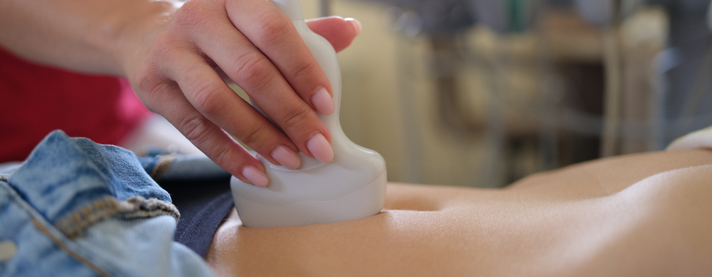

Ultrassonografia

A ultrassonografia é um exame de imagem que utiliza ondas sonoras de alta frequência para criar imagens detalhadas dos órgãos, tecidos e estruturas internas do corpo.
Tire suas dúvidas sobre o exame conosco!
O que é a Ultrassonografia?
A ultrassonografia, ou ultrassom, é um exame de imagem que permite a visualização de alterações e patologias que acometem o organismo humano. A captura das imagens não expõe o paciente à radiação ionizante.
Para que serve a ultrassonografia?
A ultrassonografia é um exame que proporciona uma visão detalhada das estruturas internas do corpo, permitindo a avaliação de órgãos como o coração, o fígado, os rins, o útero, os ovários e outros.
É uma ferramenta essencial na obstetrícia para acompanhar o desenvolvimento fetal durante a gravidez.
Além disso, é amplamente utilizada para diagnosticar condições médicas, identificar anomalias, orientar procedimentos médicos e monitorar a progressão de tratamentos.
Quais são os tipos de Ultrassonografia?
Ultrassom de abdome total
A ultrassonografia de abdome total é usada para avaliar os rins, fígado, pâncreas, vesícula biliar, baço e bexiga.
O método também permite que o médico analise artérias e veias do abdômen, como a veia cava inferior e a aorta.
Ele pode ser solicitado quando há suspeita de alguma das seguintes doenças ou alterações na região do abdômen:
- Aneurisma da aorta abdominal;
- Alteração no tamanho de órgãos e estruturas;
- Acúmulo de líquido ou secreção na região abdominal;
- Dor abdominal;
- Distensão abdominal;
- Divertículos na bexiga
- Cálculo biliar (pedra na vesícula);
- Cálculo renal (pedra nos rins);
- Cisto no fígado ou rins;
- Pancreatite;
- Pólipos na vesícula biliar;
- Tumores.
A ultrassonografia do abdômen total também é usada para guiar procedimentos de biópsia, como biópsia do fígado ou rim, por exemplo.
Ultrassom da pelve e vias urinárias
A ultrassonografia pélvica, ou ultrassom pélvico, produz imagens que permitem avaliar órgãos e estruturas da pelve.
Nas mulheres, a ultrassonografia pélvica é usada para visualizar o útero, o colo uterino, as tubas uterinas, os ovários e a bexiga. Já nos homens, é possível visualizar a bexiga, a próstata e as vesículas seminais.
Seu médico pode solicitar uma ultrassonografia pélvica diante dos seguintes sinais clínicos:
- Dificuldade para engravidar;
- Dor pélvica;
- Dor durante a relação sexual;
- Inchaço na região pélvica;
- Sangramento vaginal anormal;
- Incontinência urinária;
- Dor para urinar, entre outros.
O exame auxilia a diagnosticar uma série de alterações e patologias, tais como:
- Acompanhamento da gravidez e desenvolvimento do feto;
- Cistos;
- Câncer de ovário ou útero;
- Doença inflamatória pélvica (DIP);
- Endometriose;
- Gravidez ectópica;
- Síndrome dos ovários policísticos (SOP);
- Infecções ou cistos nas vesículas seminais;
- Pólipos uterinos;
- Sangramento pós-menopausa;
- Sangramentos uterinos;
- Alterações no tamanho da bexiga;
- Tumores de bexiga;
- Outros distúrbios do sistema urinário.
A ultrassonografia pélvica também pode ser usada para guiar biópsias na região.
Ultrassonografia transvaginal
O ultrassom transvaginal, também chamado de ultrassom endovaginal, é usado para avaliar a saúde do sistema reprodutor feminino.
Ele fornece imagens de alta qualidade das seguintes estruturas e órgãos: canal vaginal; colo do útero; trompas de falópio; útero e ovários.
O ultrassom é utilizado como um exame preventivo, que faz parte da rotina de check-up da mulher, assim como a mamografia.
Seu médico também pode solicitar a realização do exame diante dos seguintes sinais clínicos:
- Dor pélvica;
- Dificuldade para engravidar;
- Sangramento vaginal anormal;
- Dor durante a relação sexual, entre outros.
O ultrassom transvaginal auxilia a diagnosticar uma série de alterações e patologias, tais como:
- Câncer de ovário ou útero;
- Cistos;
- Endometriose;
- Gravidez ectópica;
- Infecções;
- Miomas uterinos;
- Pólipos uterinos;
- Síndrome dos Ovários Policísticos;
- Sangramento pós-menopausa;
- Sangramentos uterinos, entre outros.
O ultrassom morfológico, ou ultrassonografia morfológica, é um exame de imagem simples, seguro e indolor que permite a visualização do feto dentro do útero.
O exame também é capaz de determinar o sexo do bebê e informar se você está esperando um menino ou uma menina, com cerca de 95% de precisão.
- Ultrassonografia morfológica de 1º trimestre: É feito entre 11 e 14 semanas de gestação. É usado para avaliar a saúde geral do bebê e para o rastreamento de malformações fetais de maneira precoce. Detecta com grande sensibilidade casos de Síndrome de Down.
- Ultrassonografia morfológica do 2º trimestre: É feito entre 20 e 24 semanas de gestação. O exame fornece informações mais detalhadas sobre o desenvolvimento e aspectos da formação estrutural do feto (órgãos, membros, coluna, etc.).
O ultrassom das mamas é versátil, simples e não expõe a paciente à radiação, sendo indicado para:
- Avaliar nódulos palpáveis que não são vistos na mamografia;
- Avaliar nódulos palpáveis em mulheres com menos de 40 anos de idade;
- Avaliar o conteúdo de nódulos achados na mamografia (sólidos, cistos ou nódulos sólidos císticos);
- Avaliar nódulos em gestantes;
- Guiar biópsias mamárias.
O exame auxilia a diagnosticar uma série de alterações e patologias, tais como:
- Hipertireoidismo ou Hipotireoidismo;
- Bócio (aumento da tireoide);
- Nódulos e cistos;
- Tumores.
O exame de ultrassom de tireoide não exige nenhum preparo prévio.
Como a ultrassonografia é realizada?
O médico aplica um pouco de gel na região examinada e move um pequeno dispositivo portátil chamado transdutor sobre a área.
TEXO aparelho usa ondas sonoras de alta frequência (ultrassom) para gerar imagens detalhadas da região em uma tela. 'TO
O gel usado é incolor e feito à base de água, não provocando nenhum tipo de dor ou deixando manchas nas roupas, caso haja contato.
O tempo de realização do exame varia de acordo com a complexidade dos achados.
O ultrassom transvaginal, como o próprio nome sugere, significa “através da vagina”, o que caracteriza um exame interno, ao contrário dos demais, em que o aparelho (transdutor) é conduzido por cima da pele.
Quanto tempo demora para sair o resultado de uma ultrassonografia?
O prazo para obtenção dos resultados pode variar dependendo do tipo de ultrassonografia e da urgência envolvida.
TEm geral, o médico que realiza o ultrassom já consegue fazer uma avaliação preliminar logo após a conclusão do exame. EXTO
Em situações de urgência médica, pode ser emitido um relatório imediato ou entrar em contato com o médico responsável pelo acompanhamento do paciente.
Como se preparar para realizar a Ultrassonografia?
Ultrassom de abdome total
- Jejum absoluto de 4 a 6 horas (última refeição leve);
- Lactentes e crianças de colo não necessitam de jejum;
- Evite bebidas alcoólicas, café, refrigerantes e cigarro antes do exame;
- Reter urina por no mínimo 2 horas antes do exame;
- Medicamentos podem ser ingeridos com água;
- Traga os exames anteriores pertinentes à região a ser avaliada;
- Traga o pedido médico e a guia de convênio autorizada;
- Chegue 30 minutos antes do horário agendado.
- Exames de EDA (Endoscopia Digestiva Alta) devem ser sempre realizados após o ultrassom.
- Jejum absoluto de 4 a 6 horas (última refeição leve);
- Lactentes e crianças de colo não necessitam de jejum;
- Medicamentos podem ser ingeridos com água;
- Traga os exames anteriores pertinentes à região a ser avaliada;
- Traga o pedido médico e a guia de convênio autorizada;
- Chegue 30 minutos antes do horário agendado.
- Exames de EDA (Endoscopia Digestiva Alta) devem ser sempre realizados após o ultrassom.
- Não use talco, creme e desodorante nas mamas e axilas no dia do exame;
- Traga os exames anteriores pertinentes à região a ser avaliada;
- Traga o pedido médico e a guia de convênio autorizada;
- Chegue 30 minutos antes do horário agendado.
- Esses exames necessitam de boa repleção urinária (bexiga cheia). Retenha urina por no mínimo 2 horas antes do exame; caso tenha incontinência urinária, diabetes ou outra condição que afete a função renal e a diurese, avise a uma das atendentes da clínica no momento da marcação do exame;
- Traga os exames anteriores pertinentes à região a ser avaliada;
- Traga o pedido médico e a guia de convênio autorizada;
- Chegue 30 minutos antes do horário agendado.
- Traga o cartão de pré-natal;
- Traga os exames anteriores pertinentes à região a ser avaliada;
- Traga o pedido médico e a guia de convênio autorizada;
- Chegue 30 minutos antes do horário agendado.
Pode fazer a Ultrassonografia menstruada?
Sim, a menstruação não interfere na realização ou no resultado do ultrassom, incluindo o transvaginal. Entretanto, recomendamos que os exames sejam realizados após o período menstrual para maximizar o conforto.
É preciso se depilar para fazer ultrassom?
Não é necessário se depilar antes de realizar uma ultrassonografia.
O que não pode fazer antes do ultrassom?
Antes de um ultrassom, geralmente não há restrições significativas em relação a atividades cotidianas ou alimentação.
No entanto, dependendo do tipo de ultrassom e da área a ser examinada, podem haver algumas orientações específicas fornecidas pelo médico ou pela clínica de imagem.
É importante ressaltar que as instruções podem variar dependendo do tipo de ultrassom e das práticas do centro de saúde. Portanto, é sempre recomendável seguir as orientações fornecidas pelo seu médico ou pela clínica específica onde você fará o exame.
Quais os cuidados após o ultrassom?
Não é necessário tomar qualquer precaução especial após a realização de um exame de ultrassom. É seguro retomar as atividades normais assim que sair da clínica.
Além disso, o exame não tem efeitos colaterais decorrentes das ondas sonoras utilizadas.
Pode ter relação depois de fazer ultrassom?
Geralmente não há nenhuma restrição médica para isso. Um ultrassom é um procedimento não invasivo e não afeta diretamente a sua capacidade de se envolver em atividades sexuais.
No entanto, se você recebeu algum tipo de recomendação específica do médico ou se está passando por algum tratamento que restringe atividades físicas ou sexuais, é importante seguir as orientações fornecidas.